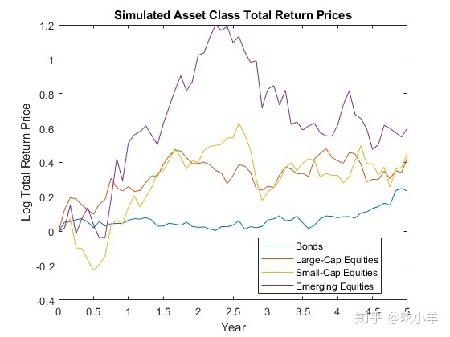
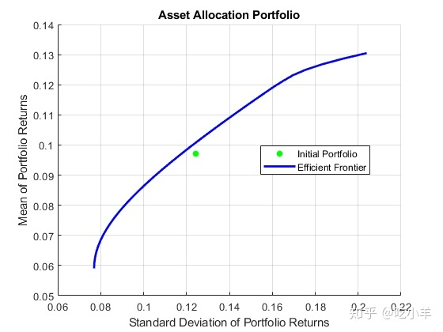
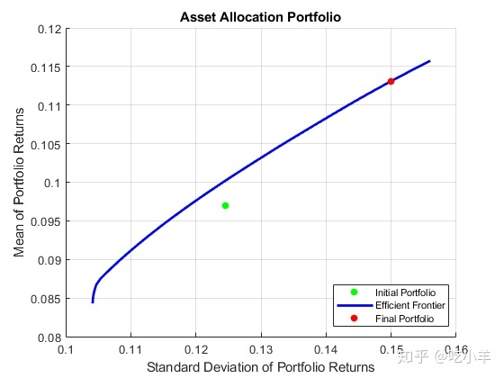

Home
此示例说明如何设置基本资产配置问题，该问题使用均值方差投资组合优化和一个Portfolio对象来估算有效投资组合。
步骤1.定义投资配置问题
假设您要管理具有四个资产类别的资产配置基金：债券、大盘股票、小盘股票和新兴股票。该基金只有多头，没有借款或杠杆作用，股票投资组合中的资金不应超过85％，新兴股票投资组合中的资金不应超过投资组合的35％。前三项资产的交易成本为每年10个基点，而新兴股票的交易成本则高出四倍。最后，您要确保平均营业额不超过15％。要解决此问题，您将建立一个基本的均值方差投资组合优化问题，然后慢慢引入对该问题的各种约束条件以获得解决方案。
要设置投资组合优化问题，请从与该问题的结构相关的已知数量的基本定义开始。假定每个资产类别都具有具有实时价格的可交易资产。这样的资产可以是，例如，交易所买卖基金（ETF）。初始投资组合中每个资产的总资产为750万美元，另外还有6万美元的现金头寸。这些基本数量和交易成本是在以下元胞阵列Asset中以下的变量里设置：即当前价格是向量Price中，当前投资组合是向量Holding，交易成本是向量UnitCost。
要分析此投资组合，您可以在table对象中设置交易记事本，以帮助跟踪价格、持仓、权重等。特别是，您可以计算初始投资组合权重，并将其维持在一个名为InitPort的新交易记事本中。
Asset = { 'Bonds', 'Large-Cap Equities', 'Small-Cap Equities', 'Emerging Equities' };
Price = [ 52.4; 122.7; 35.2; 46.9 ];
Holding = [ 42938; 24449; 42612; 15991 ];
UnitCost = [ 0.001; 0.001; 0.001; 0.004 ];
?
Blotter = table('RowNames', Asset);
Blotter.Price = Price;
Blotter.InitHolding = Holding;
Wealth = sum(Blotter.Price .* Blotter.InitHolding);
Blotter.InitPort = (1/Wealth)*(Blotter.Price .* Blotter.InitHolding);
Blotter.UnitCost = UnitCost;
Blotter
Blotter=4×4 table
Price InitHolding InitPort UnitCost
_____ ___________ ________ ________
?
Bonds 52.4 42938 0.3 0.001
Large-Cap Equities 122.7 24449 0.4 0.001
Small-Cap Equities 35.2 42612 0.2 0.001
Emerging Equities 46.9 15991 0.1 0.004 步骤2.模拟资产价格
由于这是一个假设示例，因此要根据资产类别的年度资产总回报的给定均值和协方差来模拟资产价格，portsim函数可用于创建具有所需均值和协方差的资产收益。具体来说，portsim用于模拟五年的每月总收益，然后绘制以显示模拟的总收益价格的对数。
变量AssetMean和AssetCovar中保持年度资产总收益的均值和协方差。变量Y中保留了模拟资产的总回报价格（复合总回报）。在此示例中，所有初始资产总回报价格均已标准化为1。
AssetMean = [ 0.05; 0.1; 0.12; 0.18 ];
AssetCovar = [ 0.0064 0.00408 0.00192 0;
0.00408 0.0289 0.0204 0.0119;
0.00192 0.0204 0.0576 0.0336;
0 0.0119 0.0336 0.1225 ];
?
X = portsim(AssetMean'/12, AssetCovar/12, 60); % monthly total returns for 5 years (60 months)
[Y, T] = ret2tick(X, [], 1/12); % form total return prices
plot(T, log(Y));
title('\bfSimulated Asset Class Total Return Prices');
xlabel('Year');
ylabel('Log Total Return Price');
legend(Asset,'Location','best');
步骤3.设置Portfolio对象
要探索高效边界上的投资组合，请使用以下规范设置Portfolio对象：
- 投资组合权重为非负数，总和为
1 - 股权分配不超过投资组合的85％
- 新兴股权不超过投资组合的35％
这些规范在以下使用Portfolio对象的步骤中被并入Portfolio对象p。
Blotter中的初始投资组合规格提供了全部资产的数量，因此您无需直接指定NumAssets属性。接下来，设置默认约束（仅限长期预算约束）。此外，设置对投资组合中的股票施加上限的组约束（在组矩阵中以1标识的股票）和对新兴股票的上限约束。尽管您可以使用setBounds函数来设置新兴市场股票的上限，但请注意如何使用函数addGroups来设置此约束。- 要完全说明均值方差投资组合优化问题，必须指定资产收益率的均值和协方差。由于从变量中
AssetMean和AssetCovar中的这些时刻开始，因此您可以使用setAssetMoments函数将这些变量输入到Portfolio对象中（请记住，您假设原始数据是月收益，这就是为什么您将年度输入时刻除以12以获得月收益的原因）。 - 将总退货价格与
estimateAssetMoments函数一起使用，并指定您的数据Y是价格而不是退货，以估算Portfolio对象的资产退货时间。 - 尽管您
Portfolio对象的收益以月收益为单位，并且由于以后的费用是按年计算的，所以通过对Portfolio对象p的AssetMean和AssetCovar属性的直接转换，将它们指定为年化总收益很方便。 - 显示Portfolio对象
p。
p = Portfolio('Name', 'Asset Allocation Portfolio', ...
'AssetList', Asset, 'InitPort', Blotter.InitPort);
?
p = setDefaultConstraints(p);
p = setGroups(p, [ 0, 1, 1, 1 ], [], 0.85);
p = addGroups(p, [ 0, 0, 0, 1 ], [], 0.35);
?
p = setAssetMoments(p, AssetMean/12, AssetCovar/12);
p = estimateAssetMoments(p, Y, 'DataFormat', 'Prices');
?
p.AssetMean = 12*p.AssetMean;
p.AssetCovar = 12*p.AssetCovar;
?
display(p);
p =
Portfolio with properties:
?
BuyCost: []
SellCost: []
RiskFreeRate: []
AssetMean: [4x1 double]
AssetCovar: [4x4 double]
TrackingError: []
TrackingPort: []
Turnover: []
BuyTurnover: []
SellTurnover: []
Name: 'Asset Allocation Portfolio'
NumAssets: 4
AssetList: {1x4 cell}
InitPort: [4x1 double]
AInequality: []
bInequality: []
AEquality: []
bEquality: []
LowerBound: [4x1 double]
UpperBound: []
LowerBudget: 1
UpperBudget: 1
GroupMatrix: [2x4 double]
LowerGroup: []
UpperGroup: [2x1 double]
GroupA: []
GroupB: []
LowerRatio: []
UpperRatio: []
MinNumAssets: []
MaxNumAssets: []
BoundType: [4x1 categorical]步骤4.验证投资组合问题
投资组合优化的重要步骤是验证投资组合问题是否可行，主要测试是确保投资组合集是非空的且是有界的。使用estimateBounds函数确定投资组合集的边界。在这种情况下，由于lb和ub都是有限的，因此集合是有界的。
[lb, ub] = estimateBounds(p);
display([lb, ub]);
0.1500 1.0000
0 0.8500
0 0.8500
0 0.3500步骤5.绘制有效边界
给定已构造的Portfolio对象，请使用plotFrontier函数查看有效边界。您可以使用40个投资组合显示边界，而不必使用默认的10个投资组合查看边界。注意，有效投资组合的总回报每年大约介于6％和16％之间。
plotFrontier(p, 40);
步骤6.评估总投资回报与净投资回报
Portfolio对象p不包括交易成本，因此在p中指定的投资组合优化问题使用总投资组合收益作为收益替代。要处理净回报，请创建包含交易成本的第二个Portfolio对象q。
q = setCosts(p, UnitCost, UnitCost);
display(q);
q =
Portfolio with properties:
?
BuyCost: [4x1 double]
SellCost: [4x1 double]
RiskFreeRate: []
AssetMean: [4x1 double]
AssetCovar: [4x4 double]
TrackingError: []
TrackingPort: []
Turnover: []
BuyTurnover: []
SellTurnover: []
Name: 'Asset Allocation Portfolio'
NumAssets: 4
AssetList: {1x4 cell}
InitPort: [4x1 double]
AInequality: []
bInequality: []
AEquality: []
bEquality: []
LowerBound: [4x1 double]
UpperBound: []
LowerBudget: 1
UpperBudget: 1
GroupMatrix: [2x4 double]
LowerGroup: []
UpperGroup: [2x1 double]
GroupA: []
GroupB: []
LowerRatio: []
UpperRatio: []
MinNumAssets: []
MaxNumAssets: []
BoundType: [4x1 categorical]步骤7.分析投资组合结构的描述性属性
要更具体地了解有效投资组合收益和风险的范围，请使用estimateFrontierLimits函数在有效边界的端点获取投资组合。给定这些投资组合，使用estimatePortMoments函数计算他们的矩。以下代码生成一个表格，该表格列出了初始投资组合的风险和回报，以及在有效边界端点处的投资组合的投资回报的总和净矩。
[prsk0, pret0] = estimatePortMoments(p, p.InitPort);
?
pret = estimatePortReturn(p, p.estimateFrontierLimits);
qret = estimatePortReturn(q, q.estimateFrontierLimits);
?
displayReturns(pret0, pret, qret);
Annualized Portfolio Returns ...
Gross Net
Initial Portfolio Return 9.70 % 9.70 %
Minimum Efficient Portfolio Return 5.90 % 5.77 %
Maximum Efficient Portfolio Return 13.05 % 12.86 %结果表明，从当前投资组合到有效边界端点的有效投资组合的交易成本在14到19个基点之间（这些成本是投资组合总收益和净收益之间的差）。由于股权分配的限制，最高有效投资组合收益（13％）小于最高资产收益（18％）。
步骤8.在有效边界上以指定的回报水平获得投资组合。
选择有效投资组合的一种常见方法是选择一个投资组合，该投资组合具有预期投资组合收益范围的期望部分。要获得有效边界上从最小收益到最大收益范围的30％的投资组合，请使用Portfolio对象q从qret中获得净收益范围，并使用内插函数interp1以获得30％的水平以获得投资组合qwgt。
Level = 0.3;
?
qret = estimatePortReturn(q, q.estimateFrontierLimits);
qwgt = estimateFrontierByReturn(q, interp1([0, 1], qret, Level));
[qrsk, qret] = estimatePortMoments(q, qwgt);
?
displayReturnLevel(Level, qret, qrsk);
Portfolio at 30% return level on efficient frontier ...
Return Risk
7.90 9.09
display(qwgt);
qwgt = 4×1
?
0.6252
0.1856
0.0695
0.1198目标投资组合是从最小到最大净收益率范围的30％，收益率为7.9％，风险为9.1％。
步骤9.在有效边界上以指定的风险级别获得投资组合
尽管您可以接受此结果，但假设您要为投资组合风险设定目标价值。具体来说，假设您的保守目标风险为10％，中度目标风险为15％，激进目标风险为20％，并且您想要获得满足每个风险目标的投资组合。使用estimateFrontierByRisk函数获取变量TargetRisk中指定的目标风险。由此产生的三个有效的投资组合在qwgt中。
TargetRisk = [ 0.10; 0.15; 0.20 ];
qwgt = estimateFrontierByRisk(q, TargetRisk);
display(qwgt);
qwgt = 4×3
?
0.5407 0.2020 0.1500
0.2332 0.4000 0.0318
0.0788 0.1280 0.4682
0.1474 0.2700 0.3500使用estimatePortRisk函数计算三个投资组合的投资组合风险，以确认已达到目标风险：
display(estimatePortRisk(q, qwgt));
0.1000
0.1500
0.2000假设您要从当前投资组合转到中等投资组合。您可以估算购买和销售以达到此投资组合：
[qwgt, qbuy, qsell] = estimateFrontierByRisk(q, 0.15);如果将此投资组合的购买和销售平均，您可以看到平均营业额为17％，高于15％的目标：
disp(sum(qbuy + qsell)/2)
0.1700由于还希望确保平均周转率不超过15％，因此可以使用setTurnover将平均周转约束添加到Portfolio对象：
q = setTurnover(q, 0.15);
[qwgt, qbuy, qsell] = estimateFrontierByRisk(q, 0.15);您可以将估计的有购买和销售的有效投资组合输入到记录中：
qbuy(abs(qbuy) < 1.0e-5) = 0;
qsell(abs(qsell) < 1.0e-5) = 0; % zero out near 0 trade weights
?
Blotter.Port = qwgt;
Blotter.Buy = qbuy;
Blotter.Sell = qsell;
?
display(Blotter);
Blotter=4×7 table
Price InitHolding InitPort UnitCost Port Buy Sell
_____ ___________ ________ ________ _______ ____ ________
?
Bonds 52.4 42938 0.3 0.001 0.18787 0 0.11213
Large-Cap Equities 122.7 24449 0.4 0.001 0.4 0 0
Small-Cap Equities 35.2 42612 0.2 0.001 0.16213 0 0.037871
Emerging Equities 46.9 15991 0.1 0.004 0.25 0.15 0记录中的Buy和Sell元素是投资组合权重的变化，必须将其转换为投资组合持有量的变化才能确定交易。由于您正在使用净投资组合收益，因此必须首先计算从初始投资组合到新投资组合的交易成本。这可以通过以下方式完成：
TotalCost = Wealth * sum(Blotter.UnitCost .* (Blotter.Buy + Blotter.Sell))
TotalCost = 5.6248e+03交易成本为5,625美元，因此，通常来说，您必须在设置新的投资组合权重之前相应地调整初始财富。但是，为了简化分析，请注意，您有足够的现金（60,0000美元）留作支付交易成本，并且您不会动用现金头寸来建立投资组合中的任何头寸。因此，您可以使用新的投资组合持有量和交易量来填充您的记事本，从而获得新的投资组合，而无需更改总投资财富。首先，计算投资组合持有量：
Blotter.Holding = Wealth * (Blotter.Port ./ Blotter.Price);Compute number of shares to Buy and Sell in your Blotter:
计算Buy和Sell的股份数量到记事本：
Blotter.BuyShare = Wealth * (Blotter.Buy ./ Blotter.Price);
Blotter.SellShare = Wealth * (Blotter.Sell ./ Blotter.Price);请注意，您如何使用临时截断规则来获取要购买和出售的股票单位数量。通过除去单位成本和买卖投资组合权重来清理记事本：
Blotter.Buy = [];
Blotter.Sell = [];
Blotter.UnitCost = [];步骤10.显示最终结果
最终的结果是一个总结，其中包含拟议的交易，这些交易可以从您当前的投资组合转变为中等风险的投资组合。为了进行交易，您将需要出售16,049股债券资产和8,069股小型股票资产，并需要购买23,986股新兴股票资产。
display(Blotter);
Blotter=4×7 table
Price InitHolding InitPort Port Holding BuyShare SellShare
_____ ___________ ________ _______ _______ ________ _________
?
Bonds 52.4 42938 0.3 0.18787 26889 0 16049
Large-Cap Equities 122.7 24449 0.4 0.4 24449 0 0
Small-Cap Equities 35.2 42612 0.2 0.16213 34543 0 8068.8
Emerging Equities 46.9 15991 0.1 0.25 39977 23986 0 最终使用plotFrontier函数显示有效边界和针对完全指定的投资组合优化问题的初始投资组合。它还在高效率边界上增加了中等风险或最终投资组合的位置。
plotFrontier(q, 40);
hold on
scatter(estimatePortRisk(q, qwgt), estimatePortReturn(q, qwgt), 'filled', 'r');
h = legend('Initial Portfolio', 'Efficient Frontier', 'Final Portfolio', 'location', 'best');
set(h, 'Fontsize', 8);
hold off
工具函数
function displayReturns(pret0, pret, qret)
fprintf('Annualized Portfolio Returns ...\n');
fprintf(' %6s %6s\n','Gross','Net');
fprintf('Initial Portfolio Return %6.2f %% %6.2f %%\n',100*pret0,100*pret0);
fprintf('Minimum Efficient Portfolio Return %6.2f %% %6.2f %%\n',100*pret(1),100*qret(1));
fprintf('Maximum Efficient Portfolio Return %6.2f %% %6.2f %%\n',100*pret(2),100*qret(2));
end
?
function displayReturnLevel(Level, qret, qrsk)
fprintf('Portfolio at %g%% return level on efficient frontier ...\n',100*Level);
fprintf('%10s %10s\n','Return','Risk');
fprintf('%10.2f %10.2f\n',100*qret,100*qrsk);
end注：本文根据MATLAB官网内容修改而成。
======================================================================
我的测试结果及程序
下面是我测试的代码：